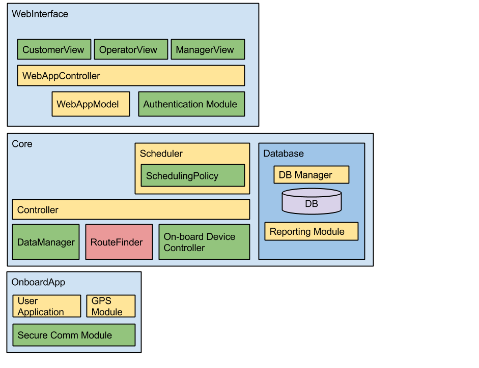
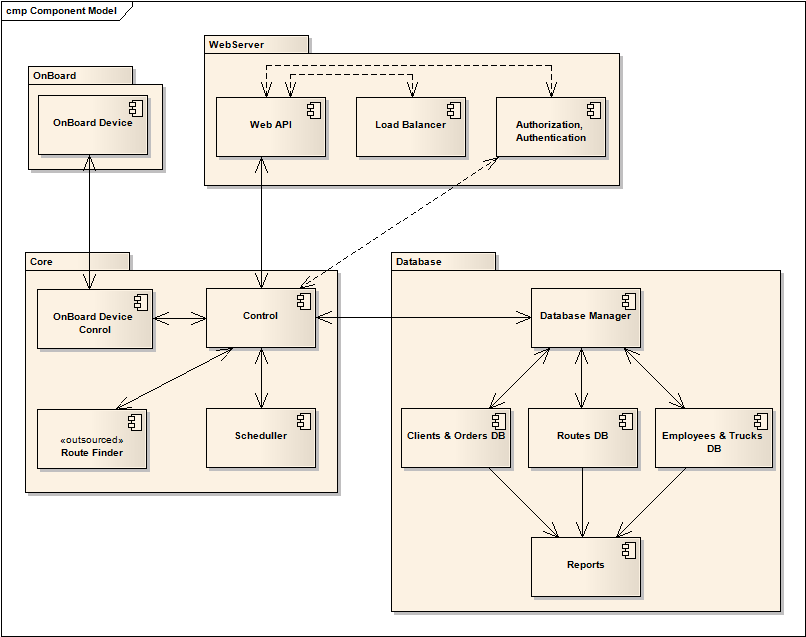
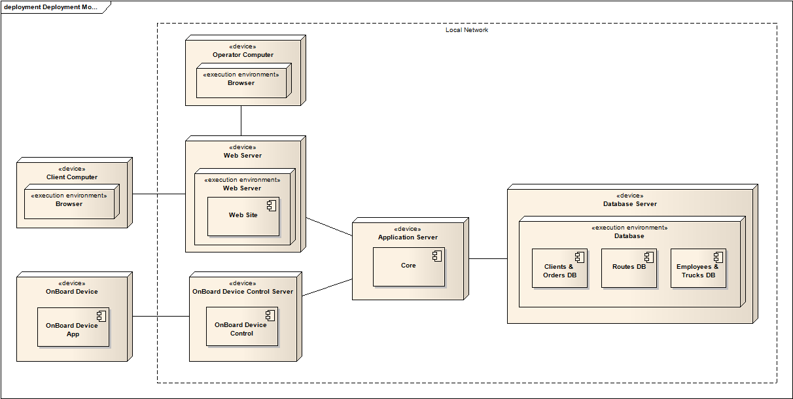
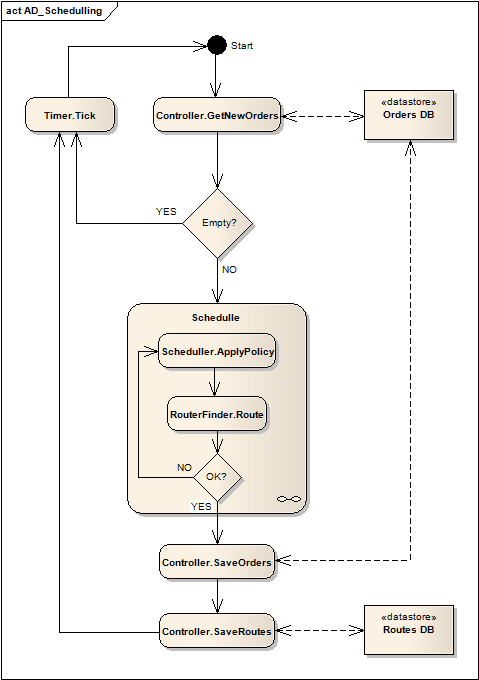
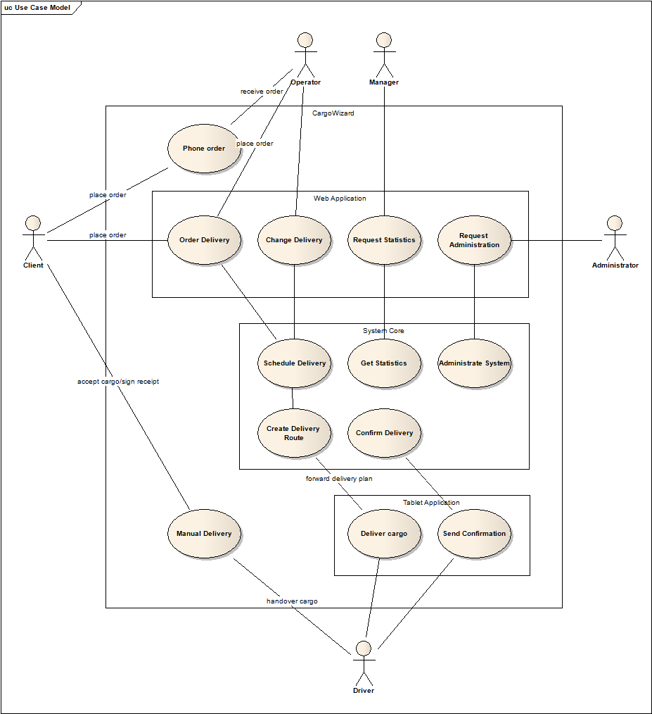
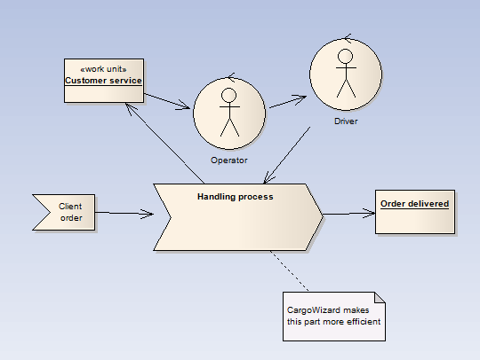

Popis architektury projektu CargoWizard
Obsah
Logical View
Logický pohled nabízí zobrazení zákaldní dekompozice celého systému.
WebInterface
Webová aplikace umožňuje uživatelům komunikaci se systémem. Je postavena na návrhovém vzoru model-view-controller. Skrze jednotlivé pohledy poskytuje uživatelům data podle jejich rolí. Tedy zákazníkům poskytuje možnost zadávat nové objednávky a prohlížet ty staré. Operátorům poskytuje rozhraní pro zadávání a editaci objednávek a zobrazuje informace o zákaznících. Manažerům webová aplikace zobrazuje statistické údaje o provozu firmy, o množství zakázek a rychlosti jejich provedení a v neposlední řadě aktuální polohu všech vozidel.
WebAppController řídí logiku celé aplikace, stará se o přihlašování uživatelů, identifikuje jejich role a obsluhuje požadavky. WebAppModel poskytuje controlleru data, která získává z core systému.
Core System
Core slouží jako backend celého sytému, komunikuje s oběma typy frontendů (tj. webovou a on-board aplikací) a zprostředkovává jim přístup do databáze. Core je interně řízen modulem Controller, který se stará o přeposílání dat mezi všemi částmi systému.
Modul pro plánování tras (Scheduler) získává od Controlleru informace o nových zakázkách, tyto zpracovává do logistických plánů a posílá je zpět. Controller pak nechá spočítat modulem RouteFinder konkrétní trasu, a tu pak skrze module On-board Device Controller posílá přímo vozidlům. Činnost plánovače je možné ovlivňovat výběrem určité plánovací politiky (SchedulingPolicy).
Modul RouteFinder je dodaný externí firmou, která se zabývá vývojem navigačních systémů a má tedy přístup k detailním mapovým podkladům. Vlastní modul vyžaduje od systému typ vozidla a jeho aktuální polohu, sadu waypointů (míst s vyzvednutím či odevzdáním zásilky) a případná omezení na jejich pořadí. Na základě těchto údajů spočítá přesnou trasu. Modul garantuje, že trasa bude vyhovovat zadanému typu vozidla. Další funkcí modulu je překlad adres na GPS souřadnice.
On-board Application
Aplikace na zařízení komunikuje prostřednictvím zabezpečeného spojení s Core systémem. Především přijímá informace o zakázkách a zobrazuje je řidiči a od něj pak získává potvrzení o doručení. Dále dostává informace o trase, kterou má řidič jet, tu zobrazuje prostřednictvím standardního navigačního programu v daném on-board zařízení. Posledním úkolem této aplikace je sledovat aktuální polohu vozidla a ve stanoveném intervalu ji posílat do systému.
Následuje pohled na dekompozici systému v podobě formálních class diagramů.


Development View
Tento pohled na systém zobrazuje jeho jednotlivé komponenty a vazby mezi nimi.
{kind=link}
Popis většiny komponent odpovídá tomu, co bylo napsáno výše v rámci logického pohledu. Jedině u databáze, byť je logicky brána jako součást Core, nejsou uvedeny podrobnější informace.
Database
Databázový systém řídí manager schopný provozovat několik nezávislých databází zároveň. První databáze Clients_Orders obsahuje osobní informace o klientech a zároveň eviduje všechny zakázky a jejich stav.
Databáze Employees_Trucks ukláda data o zaměstancích a eviduje jejch docházku. Dále pak udržuje informaci o jedntlivých vozidlech, o jejich stavu, najetých kilometrech, průměrné spotřebě a trasách, které absolvovaly.
Speciální význam má RouteDB, která uchovává dočasnou informaci o všech aktuálních trasách. Ukládá se do ní výstup z Route Finderu. Odtud se také berou data trasy, která se posílají do On-board zařízení.
Deployment View
{kind=link}
Process View
Diagramy aktivit
{kind=link}
Tento diagram ukazuje, jak probíhá plánování trasy objednávek. Celý tento proces běží jako job na pozadí aplikace.
- Nejprve se z DB načtou nové objednávky, které ještě nebyly naplánovány.
- Pokud jsou nějaké, začne jejich plánování podle plánovací politiky.
- Po naplánování se objednávky uloží a potvrdí, uloží se rovněž i naplánované trasy.
{kind=link}
Tento diagram ukazuje, jak probíhá vyřizování objednávek z pohledu řidiče/jeho OBD.
- Poté, co řidič nastoupí do auta, zapne OBD a vyžádá si trasu od systému.
- Po obdržení trasy a spušnění navigace, řidič vyrazí na cesty. OBD automaticky začne průběžně logovat do systému data o cestě.
- Řidič může naložit náklad / vyložit náklad / vrátit se zpět, pokud má hotovo.
Use Case Model
{kind=link}
Následuje popis jednotlivých případů užití spolu s odkazy do Katalogu požadavků [1].
Phone Order
Zákazník volá do telefonního centra kvůli zadání nové zakázky nebo úpravě parametrů staré. Operátor kontaktuje zákazníka ohledně výsledku potvrzení objednávky Use Cases: UC2 - UC8
Order Delivery
Zákazník zadává novou objednávku prostřednictvím webového rozhraní. Systém posílá zákazníkovi potvrzení o objednávce či její změně. Use cases: UC1, UC2 - UC5
Change Delivery
Operátor mění parametry objednávky. Use cases: UC6 UC7
Request Statistics
Manažer prostřednictvím webového rozhraní požádá o zobrazení statických dat. Use cases: UC9
Schedule delivery
Scheduler naplánuje objednávku do určité trasy. Use cases: UC1 UC2 UC6
Get Statistics
Systém vyhledá v databázi statistická data a předá je webové aplikaci. Use cases: UC9
Administer System
Administrátor se skrze webové rozhraní přihlásí do systému. Use cases:
Create Delivery Route
Systém přesně spočítá zadanou trasu v GPS souřadnicích a přepošle ji do on-board do zařízení. Use cases: UC1 UC2 UC3
Confirm Delivery
Systém přijímá potvrzení o předání zakázky zákazníkovi. Use cases: UC1 - UC3
Deliver Cargo
On-board aplikace přijímá trasu z centráního systému a zobrazí ji řidiči na zařízení
Send Confirmation
Řidič zadá potvrzení o předání zakázky. On-board aplikace posílá potvrzení do systému.
Manual Delivery
Zákazník předá zboží řidiči/přijme zboží od řidiče. Řidič vystaví povrzení o příjmu/předání. Use cases: UC1 - UC3
Scenarios
Change Order

Change Order - Failed

Change Order - Failed - Storno

Order Operator

Order Operator - Replan

Order Operator - Replan - Failed - Stored

Order Operator - Replan - Failed - Storno

Order Web

Order Web - Replan

Order Web - Replan - Failed - Stored

Order Web - Replan - Failed - Storno

Statistics

Business Model
Základní pohled na fungování společnosti.
Reference
[1] CargoWizard - Katalog Požadavků